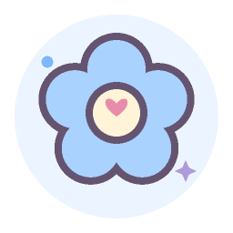

Einfache, intuitive Bedienung
Klare Ansichten helfen dir, deine Periode einzutragen und deinen Zyklus im Blick zu behalten.
Dein Zyklus im Blick
Erfasse deine Periode einfach und behalte deinen Zyklus mit Kalender und verständlichen Schätzungen im Blick. Deine Einträge werden lokal auf deinem Gerät gespeichert. Ein Konto brauchst du nicht.
Geplanter Android-Start1. Februar 2027Der Download wird zum Start hier verlinkt.

Ein Blick in die App
Heute, Periode und Kalender: dein Zyklus, deine Einträge und Schätzungen im Überblick.
Dein Zyklustag, deine Einträge und die nächsten geschätzten Termine auf einer Seite.
Echte App-Ansichten mit Beispieldaten in der gewählten Sprache.
Das kann 1+1=3
Klare Ansichten helfen dir, deine Periode einzutragen und deinen Zyklus im Blick zu behalten.

Zyklusphasen und fruchtbare Tage als Orientierung aus deinen Einträgen. Vorhersagen bleiben Schätzungen.
Schalte Zykluserinnerungen nach Wunsch ein oder aus. Wähle neutralen Text oder Zyklusdetails.
Ob du deinen Zyklus beobachten möchtest oder dir ein Kind wünschst: 1+1=3 hilft dir, deine Einträge festzuhalten und wiederzufinden.
Persönlich bleibt persönlich
Deine Zyklusdaten werden lokal auf deinem Gerät gespeichert. Du brauchst kein Konto und entscheidest selbst, ob du eine Sicherung exportierst.
App-Datenschutz lesenGut zu wissen
Der Android-Start ist für den 1. Februar 2027 geplant. Sobald die App im Play Store verfügbar ist, findest du den Downloadlink hier.
Du kannst die App 14 Tage kostenlos testen. Danach ist für die weitere Nutzung ein Kauf erforderlich. Die endgültigen Preise und Konditionen veröffentlichen wir vor dem Start.
Die App schätzt Termine aus deinen Zykluseinträgen. Ein Zyklus kann sich verändern; ein berechneter Eisprung ist keine Bestätigung. Die Vorhersagen sind nicht zur Verhütung geeignet.
Nein. Du kannst die App ohne Benutzerkonto nutzen. Deine Einträge bleiben auf deinem Gerät.
Deine Einträge werden lokal auf deinem Gerät gespeichert. Du brauchst kein Konto und verwaltest deine Daten direkt in der App. Über Export und Import kannst du deine Einträge sichern und wiederherstellen. Bewahre exportierte Dateien selbst sicher auf.
Der nächste Schritt
Wir bereiten den Android-Start für den 1. Februar 2027 vor. Den Link zum Play Store findest du dann hier.